Открытие свойств у поля
-
Нажмите левой кнопкой мыши на поле в анкете.
-
Справа откроется панель со свойствами поля.
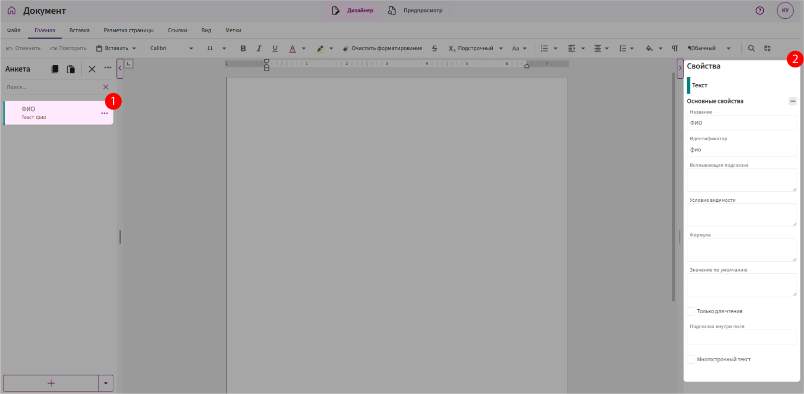
Свойства полей
Название
Что это такое:
Название — это текст, который отображается рядом с полем в анкете.
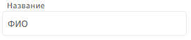
Зачем нужно:
Помогает понять, что именно нужно ввести в это поле. Например:
ФИО сотрудника, Номер договора, Дата начала.
Особенности:
Название можно менять в любое время — это не влияет на работу формул или логики шаблона.
Идентификатор
Что это такое:
Идентификатор — это внутреннее имя поля, которое используется в логике и формулах.
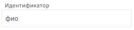
Зачем нужно:
Применяется в формулах, условиях видимости, метках, масках имени файла и других выражениях. Например:
датаРождения, суммаЗаказа, контакт_менеджер.
Особенности:
-
Создаётся автоматически после ввода названия поля.
-
Можно изменить вручную.
-
Допустимые символы: только буквы, цифры и подчёркивания.
-
Идентификаторы не должны повторяться.
Важно:
🚫 Не меняйте идентификатор без необходимости.
Если вы всё же изменили его — обязательно проверьте и обновите во всех местах, где он используется. Иначе шаблон может перестать работать корректно.
Всплывающая подсказка
Что это такое:
Комментарий, который появляется при наведении на значок ⓘ рядом с полем.
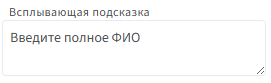
Зачем нужно:
Помогает пользователю заполнить поле правильно — особенно если название поля не даёт полной ясности.
Условия видимости
Что это такое:
Свойство, которое позволяет показывать или скрывать поле в зависимости от заданного условия.
Как работает:
Вы задаёте логическое выражение. Если оно выполняется — поле отображается. Если нет — скрывается.
Зачем нужно:
Чтобы анкета была удобной и динамичной — например, показывать дополнительные поля только при необходимости.
Пример:
Поле Адрес доставки.
Условие: показывать поле только если отмечено «Доставка».
Выражение:
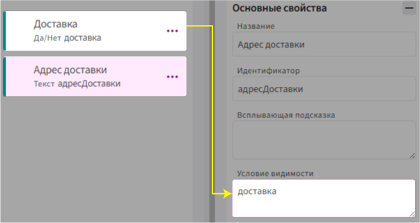
доставка— идентификатор поля типа Да/Нет
Результат:
Если пользователь выбрал, что доставка нужна — появится поле Адрес доставки. Если не выбрал — поле останется скрытым.
Формула
Что это такое:
Свойство, которое позволяет вычислять значение поля автоматически на основе других полей или данных.
Зачем нужно:
Чтобы поле не заполнялось вручную, а рассчитывалось по заданной логике. Например:
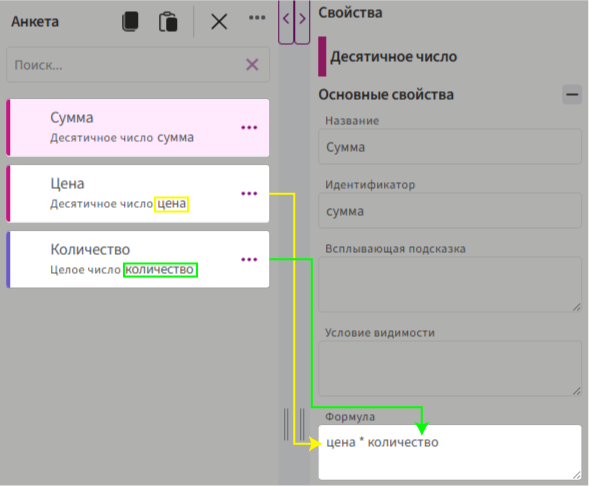
Особенности:
-
Используется язык формул.
-
Результат обновляется при изменении исходных значений или логике.
Значение по умолчанию
Что это такое:
Начальное значение, которое автоматически подставляется в поле при создании документа.
Зачем нужно:
Чтобы сэкономить время при заполнении — особенно, если в большинстве случаев значение стандартное.
Примеры:
-
"г. Москва"— для текстового поля «Город».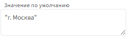
-
3— для целочисленного поля «количество».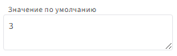
-
сегодня()— для поля «Дата».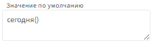
-
количество * цена— для десятичного поля «Сумма».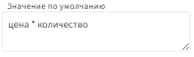
Особенности:
- Можно использовать как текст, так и выражения на языке формул.
Только для чтения
Что это такое:
Свойство, которое блокирует редактирование поля в режиме заполнения.
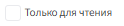
Зачем нужно:
Чтобы предотвратить случайное изменение значения пользователем.
Особенности:
-
Поле остаётся видимым, но пользователь не может его изменить.
-
Часто используется вместе с формулой или привязкой данных.
Подсказка внутри поля (только для текстовых полей)
Что это такое:
Текст, который отображается внутри самого текстового поля, пока пользователь не начал ввод данных.
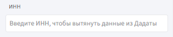
Зачем нужно:
Чтобы направить пользователя, что именно нужно ввести. Например:
Введите ИНН, чтобы вытянуть данные из Дадаты
Особенности:
- Пропадает при начале ввода.
Многострочный текст (только для текстовых полей)
Что это такое:
Свойство, которое позволяет вводить текст в несколько строк.
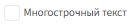
Зачем нужно:
Когда пользователю нужно ввести большой объём текста — комментарии, описание, пояснение и т.д.
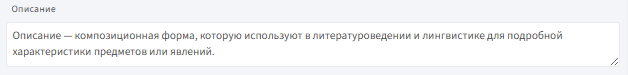
Особенности:
- Появляется увеличенная текстовая область с переносом строк.
Количество знаков после запятой (только для десятичных полей)
Что это такое:
Указывает, сколько знаков должно отображаться после запятой в числе.
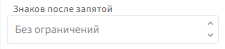
Зачем нужно:
Чтобы округлить значение и задать точность. Например:
-
2знака:123,456→123,46 -
0знаков:5,9→6
Особенности:
- Не влияет на внутренние вычисления, только на отображение.
Показать в виде выпадающего списка (только для перечислений)
Что это такое:
Настройка отображения — превращает поле в выпадающий список со значениями.
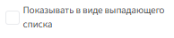
Зачем нужно:
Чтобы поле занимало меньше места в анкете.
Особенности:
-
Список формируется из заданных элементов (см. следующее свойство).
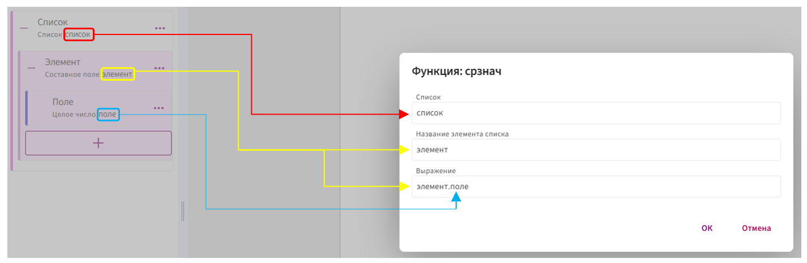
Элементы (для поля Перечисление)
Что это такое:
Список значений, из которых пользователь может выбрать только один.
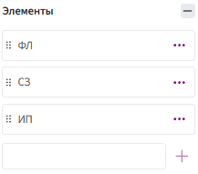
Зачем нужно:
Чтобы задать фиксированный набор допустимых вариантов. Например:
-
Мужчина,Женщина -
Предоплата,Постоплата
Как добавить элементы:
-
Введите значение в строку «Элемент».
Если в тексте используются двойные кавычки ("), замените их на одинарные ('), чтобы избежать ошибок.
-
После ввода обязательно нажмите кнопку
+справа — так элемент будет добавлен в список.
Элемент списка (для поля Список)
Что это такое:
Структура повторяющегося элемента, который будет использоваться в списке.
Зачем нужно:
Чтобы задать, из чего будет состоять каждая строка списка. Например:
-
Простая структура: одно поле (все поля, кроме составного).
-
Составная структура: несколько полей в составном поле.
Особенности:
- Настраивается при создании поля «Список».
Привязка данных (для Составного поля)
Что это такое:
Свойство, позволяющее получать значения из внешнего источника данных, например из DaData.
Зачем нужно:
Чтобы подставлять значения автоматически — например, по ИНН вытянуть из ДаДаты название организации, адрес и т.д.
Особенности:
-
Работает только внутри составных полей.
-
Требуется предварительная настройка подключения к источнику.